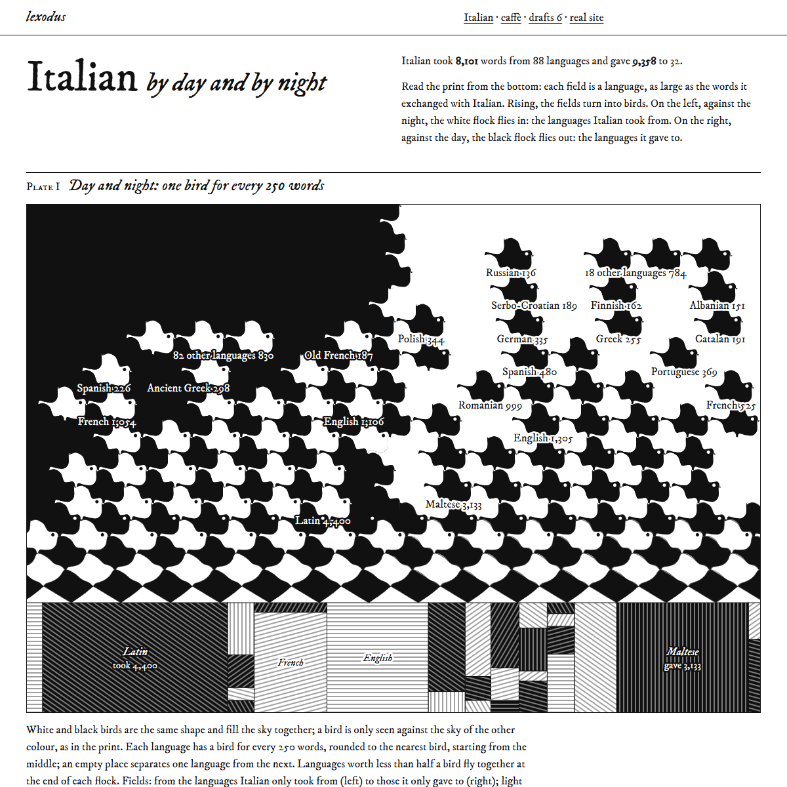
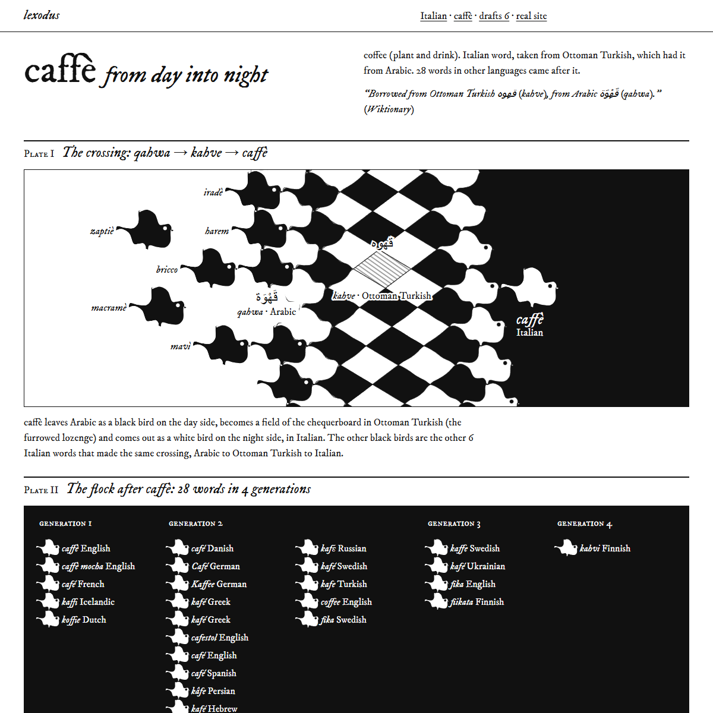
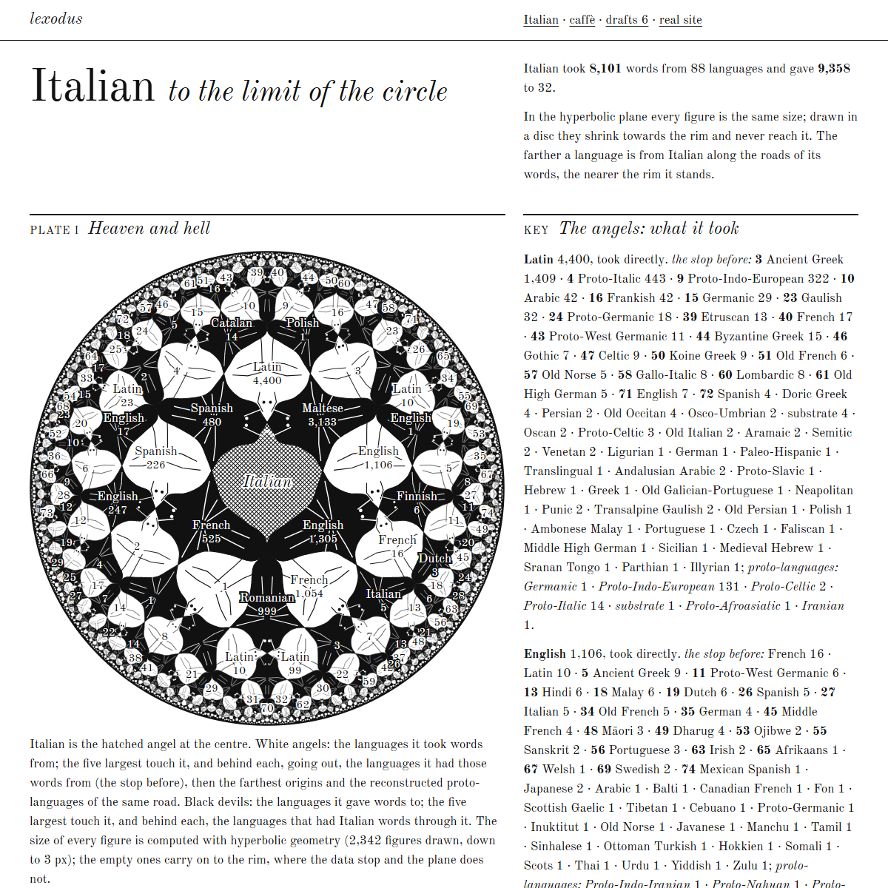
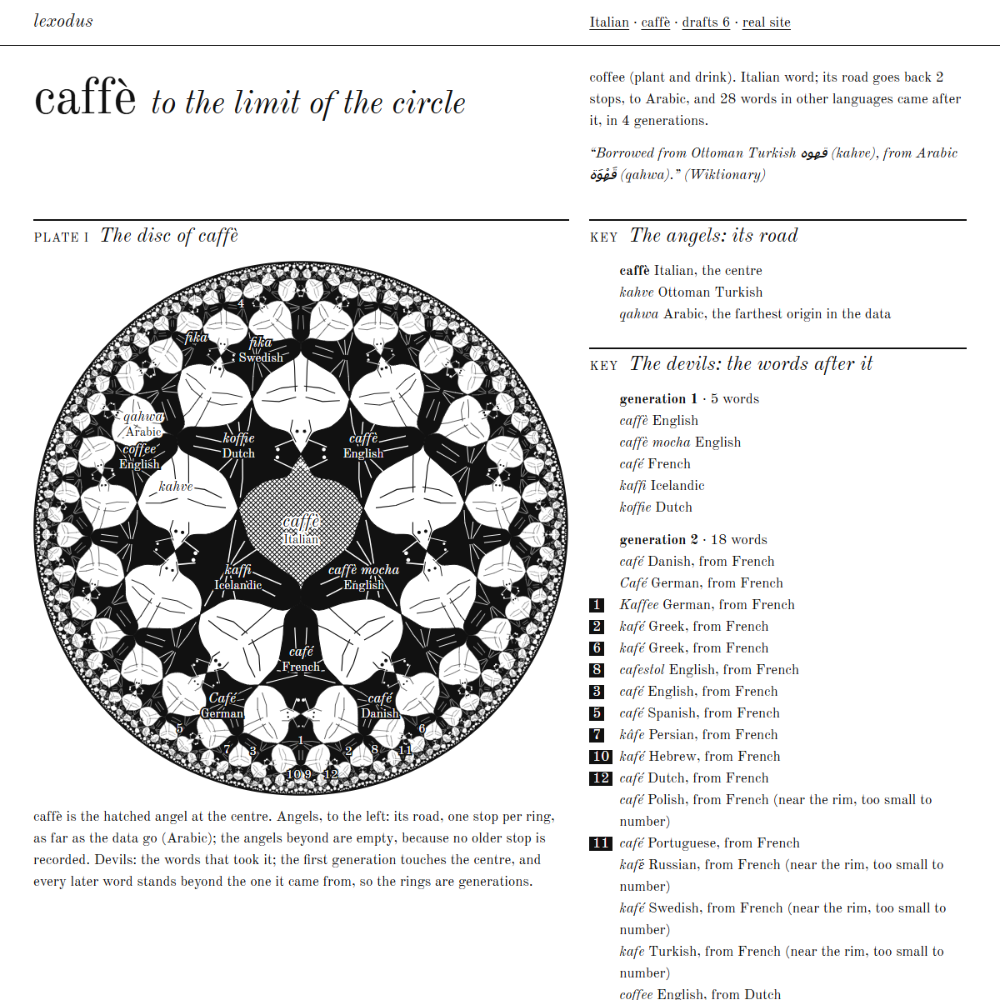
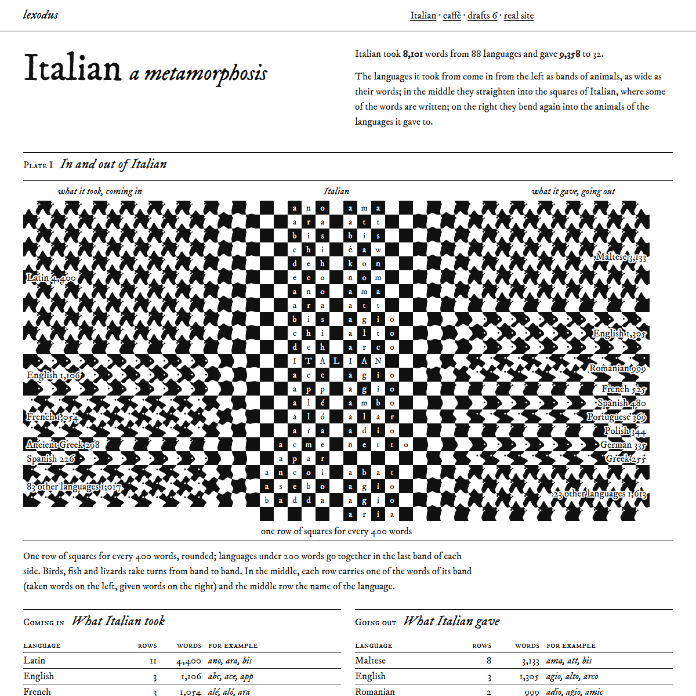
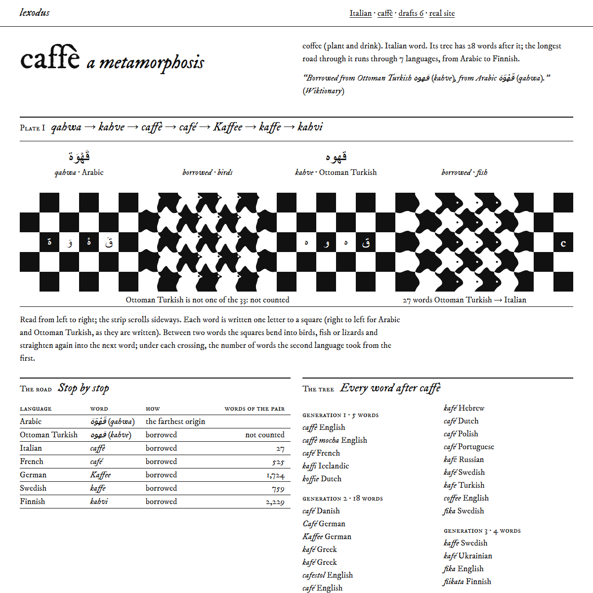

lexodus — bozze 6: tre stampe di Escher eseguite con i dati
Dalla bozza Escher della serie 5, tre varianti: ognuna prende una sola stampa e ne applica la regola fino in fondo, con i dati veri, in bianco e nero da xilografia (i toni solo a tratteggio). Versione ridotta: per ognuna solo la pagina dell’italiano e la scheda di caffè; i numeri restano in elenco accanto o sotto il disegno. Il sito vero non cambia.
-
1. Giorno e notte
M. C. Escher, Giorno e notte (Dag en nacht), xilografia, 1938.
In basso i campi: le lingue con cui l’italiano ha scambiato parole, grandi quanto le parole. Salendo diventano uccelli tutti della stessa forma, bianchi e neri incastrati: a sinistra lo stormo bianco delle lingue da cui ha preso vola verso il centro sulla notte, a destra quello nero delle lingue a cui ha dato vola via sul giorno (un uccello ogni 250 parole). Caffè parte nero dall’arabo con le altre sei parole della stessa traversata, diventa campo in turco ottomano ed esce bianco in italiano; poi lo stormo delle 28 parole venute dopo.


-
2. Limite del cerchio
M. C. Escher, Limite del cerchio IV (Cielo e inferno), xilografia, 1960.
Il piano iperbolico nel disco di Poincaré, tassellato per riflessioni vere: angeli bianchi per le lingue da cui l’italiano ha preso, diavoli neri per quelle a cui ha dato. L’italiano è l’angelo tratteggiato al centro; le cinque lingue più grandi di ogni lato lo toccano, e dietro ognuna, verso il bordo, le tappe prima (o dopo), le origini lontane e le protolingue, sempre più piccole perché così è il piano. Caffè: la sua strada come una fila di angeli fino all’arabo, le parole che l’hanno presa come diavoli, una generazione per anello.


-
3. Metamorfosi
M. C. Escher, Metamorfosi II, xilografia, 1939–40.
Una striscia di quadrati che si legge da sinistra a destra (sul telefono dall’alto in basso): ogni parola della strada più lunga di caffè, da qahwa a kahvi, è scritta una lettera per quadrato, poi i quadrati si piegano in uccelli, pesci e lucertole e tornano lettere nella parola dopo. L’italiano: da sinistra entrano a fasce di animali le lingue da cui ha preso, al centro si raddrizzano nei quadrati con le parole, a destra escono piegandosi verso le lingue a cui ha dato.

